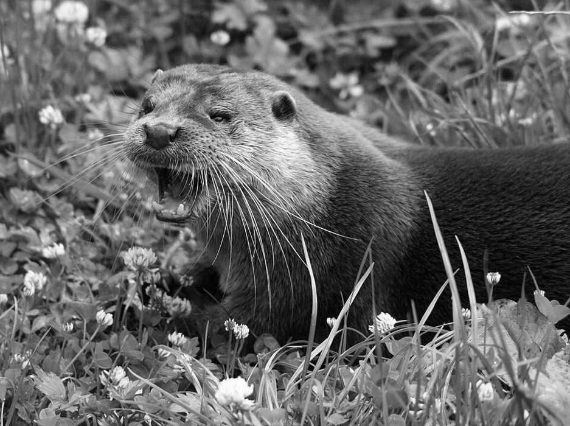

Etappe 1 · Informationen finden und ordnen
Zum Cockpit
Identisches Merkblatt
Abschnitt
1. Genau statt wertend · Dein Ziel
2. Genau statt wertend · Vergleiche
3. Genau statt wertend · Frage
4. Genau statt wertend · Gesicherte Antwort
5. Das zeigt dir das Foto · Das Foto
6. Das zeigt dir das Foto · Beobachte
7. Das zeigt dir das Foto · Gesicherte Antwort
8. Das zeigt dir das Foto · Grenze des Bildes
9. Das erfährst du im Text · Lies gezielt
10. Das erfährst du im Text · Frage
11. Das erfährst du im Text · Gesicherte Antwort
12. Sprachdetektiv · Vier Wortarten
13. Sprachdetektiv · Wörter zerlegen
14. Sprachdetektiv · Frage und gesicherte Antwort
15. Informationen ordnen · So gehst du vor
16. Informationen ordnen · Beispiel: geordnete Sammlung
17. Informationen ordnen · Frage und gesicherte Antwort
18. Informationen ordnen · Deine Etappe

Bildquelle: Dave Pape · Public Domain
Zurück
Weiter